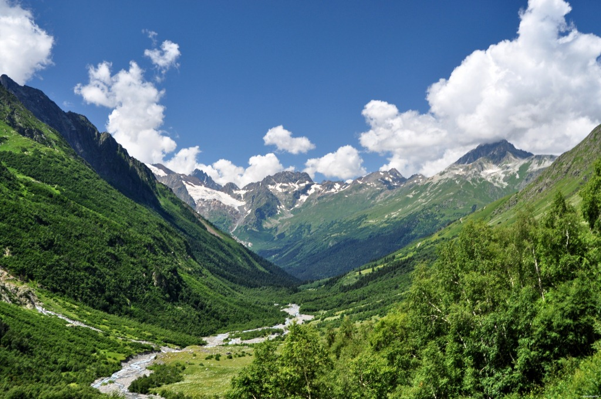

главная
Кавказ
[<a>] Кавказ подо мною. Один в вышине
[<b>] Стою над снегами у края стремнины:
[<big>] Орел, с отдаленной поднявшись вершины,
[<br>] Парит неподвижно со мной наравне.
[<em>] Отселе я вижу потоков рожденье
[<i>] И первое грозных обвалов движенье.
Здесь тучи смиренно идут подо мной;
[<small>] Сквозь них, низвергаясь, шумят водопады;
[<span>] Под ними утесов нагие громады;
[<strong>] Там ниже мох тощий, кустарник сухой;
А там уже рощи, [<sub>] зеленые сени,
Где птицы щебечут, [<sup>] где скачут олени.
А там уж и люди гнездятся в горах,
И ползают овцы по злачным стремнинам,
И пастырь нисходит к веселым долинам,
Где мчится Арагва в тенистых брегах,
И нищий наездник таится в ущелье,
Где Терек играет в свирепом веселье;
Играет и воет, как зверь молодой,
Завидевший пищу из клетки железной;
И бьется о берег в вражде бесполезной
И лижет утесы голодной волной...
Вотще! нет ни пищи ему, ни отрады:
Теснят его грозно немые громады.
[<img>]
